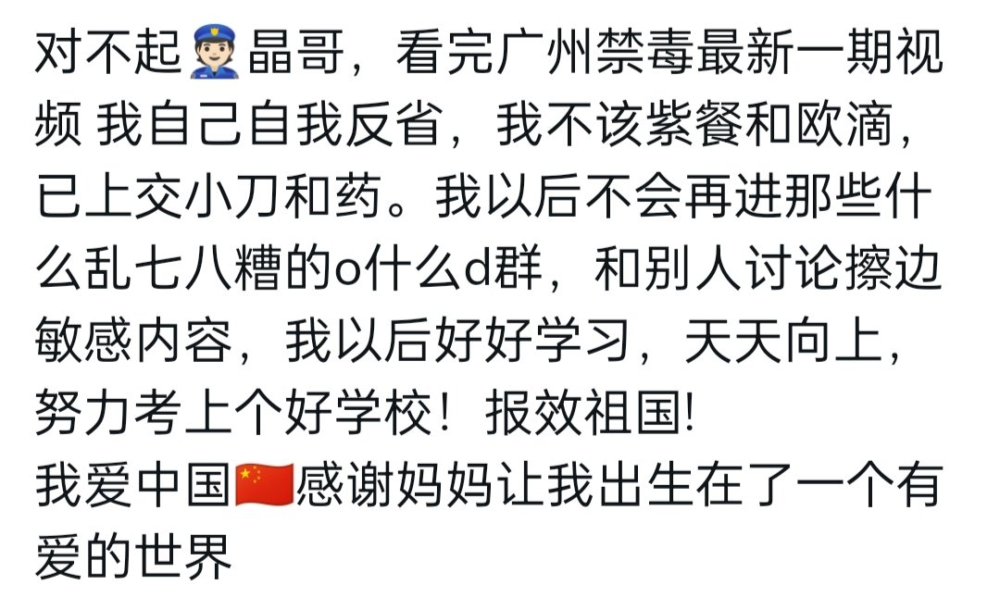

只有理性发声，有理有据，才能在主流舆论场上获得尊重和话语权。
情绪化发言和阴阳怪气的讽刺终究难当大任，不可能凝聚共识，推动问题解决。
要用一种更成熟的、能表达自身复杂处境（痛苦、反叛、迷茫与爱国并存）的理性话语才行。
情绪要找到建设性出口。
我曾在抑郁中尝试过量服药，也加入过讨论相关内容的群。那段经历让我身心受伤，但我也反思：为什么我会走到那一步？因为现实的竞争压力让我觉得自己不配活着，而在那些群里我第一次感到被接纳。我爱这个国家，因为它给了我改过的机会，但我也希望社会能更早地关注青少年的心理困境——如果学校里有靠谱的心理老师，如果禁毒宣传不止说吸毒有害，也教我们如何应对孤独，也许我不会绕那么大弯路。现在我决定好好参加学校考试，但我也想告诉和我一样的人：你的痛苦值得被认真对待，不是用刀或药，而是用求助和对话。
情绪化发言和阴阳怪气的讽刺终究难当大任，不可能凝聚共识，推动问题解决。
要用一种更成熟的、能表达自身复杂处境（痛苦、反叛、迷茫与爱国并存）的理性话语才行。
情绪要找到建设性出口。
我曾在抑郁中尝试过量服药，也加入过讨论相关内容的群。那段经历让我身心受伤，但我也反思：为什么我会走到那一步？因为现实的竞争压力让我觉得自己不配活着，而在那些群里我第一次感到被接纳。我爱这个国家，因为它给了我改过的机会，但我也希望社会能更早地关注青少年的心理困境——如果学校里有靠谱的心理老师，如果禁毒宣传不止说吸毒有害，也教我们如何应对孤独，也许我不会绕那么大弯路。现在我决定好好参加学校考试，但我也想告诉和我一样的人：你的痛苦值得被认真对待，不是用刀或药，而是用求助和对话。
